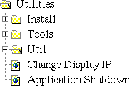
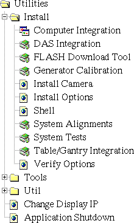
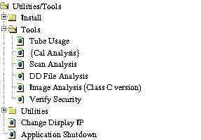
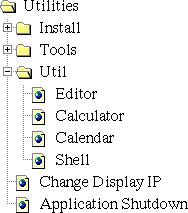

Proprietary to General Electric
Direction 5114045-800, Rev# 10
LightSpeed 4.X Service Information (Advanced)
Proprietary to General Electric |
The Utilities Menu has three sub-menus: Install, Tools, and Util. Additionally, the Utilities Menu provides the tools shown in Illustration 2
Illustration 1: Utilities Icon

Illustration 2: Utilities Main Menu (Advanced)

CHANGE DISPLAY IP
Allows the remote (InSite) user to change the IP Address where GUI’s and icon’s display.
APPLICATION SHUTDOWN
Stops the scanning level of software, but keeps the OC responsive to IRIX/UNIX commands and GE scripts. Applications need to be shutdown to run programs such as reconfig and storelog.
The purpose of the install menu is to provide a single access point on the service desktop to work from when integrating and testing a newly installed system prior to turn over to the user.
With the proprietary service key inserted, the install menu follows chapter names in the installation manual (refer to Illustration 3). Under each of the menu selections is an orderly “service by step” listing of tools and diagnostics needed to complete that step in the specific installation chapter.
Illustration 3: Utilities-Install Menu (Advanced)

SHELL
Presents a window that enables you to enter IRIX and UNIX commands, start scrips that perform a series of commands, or start programs. Press <ALT>-<F12> to exit the shell when it is no longer needed.
Illustration 4: Utilities-Tools Menu (Advanced)

Use the tools menu to access the following tools and diagnostics:
Shows you the x-ray tube’s serial and model numbers, its meter reading, and install date.
Enables you to view and analyze calibration vectors from the calibration database. This tool is not currently available. Use Scan Analysis to plot cal vectors.
Enables you to view and analyze scan data, and plot cal vectors from scan data.
Use to view and analyze the diagnostic data files.
Reports whether you have proprietary or non-proprietary access. This tool also shows the expiration date of your service key, if you have inserted one.
Illustration 5: Utilities-Util Menu

Use the Util menu to access the following tools and diagnostics:
This opens a “JOT” text editor that enables you to access a file’s content. Selecting [FILE] > [OPEN] , opens a popup box at default location /usr/g/bin. The default operation is view only.
Displays a multi-function scientific calculator.
Displays the current month’s calendar. (This is a perpetual calendar.)
Presents a window that enables you to enter IRIX (OC) commands. Example: Enter: hinv to get the same information that the OC Hardware Info menu item offers.